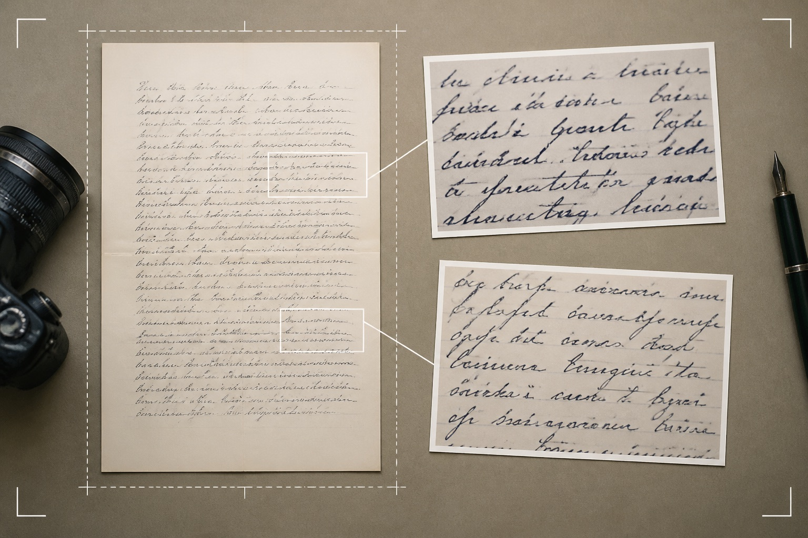
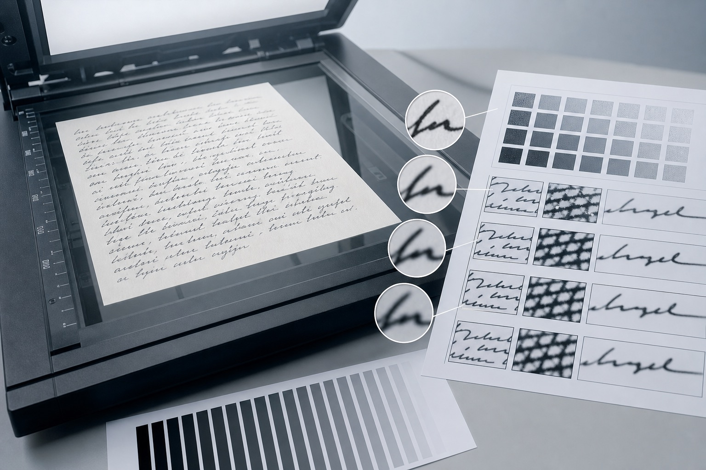
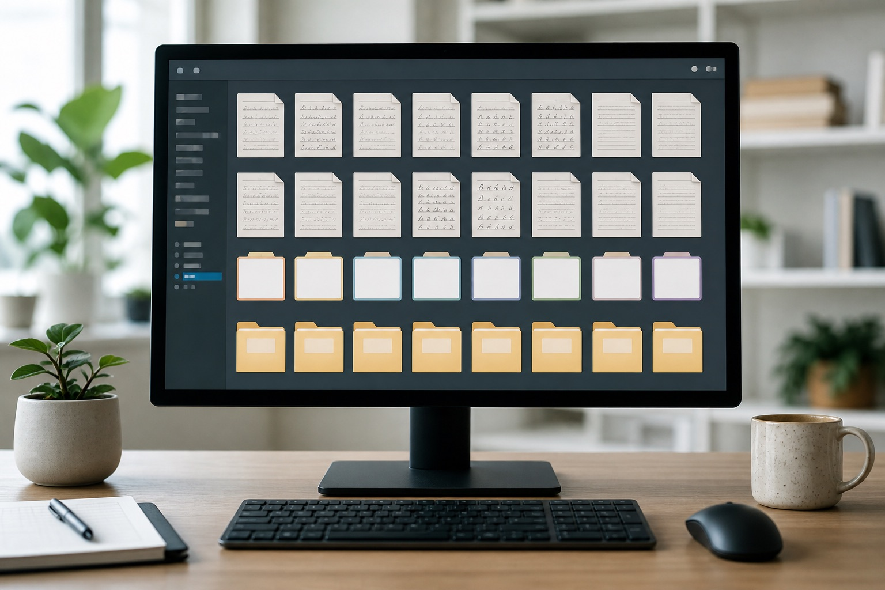
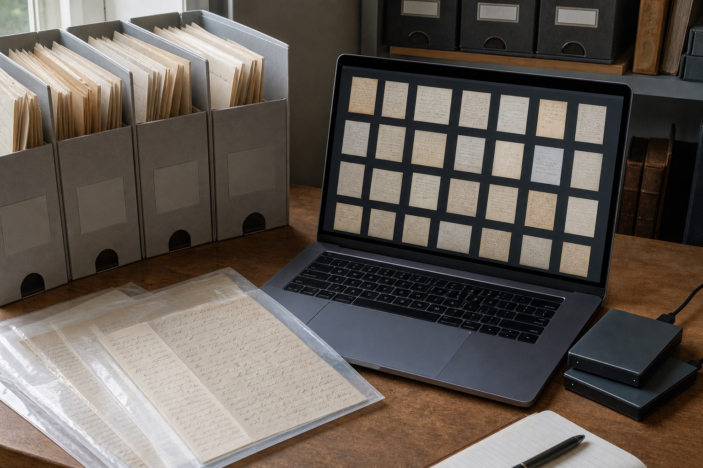
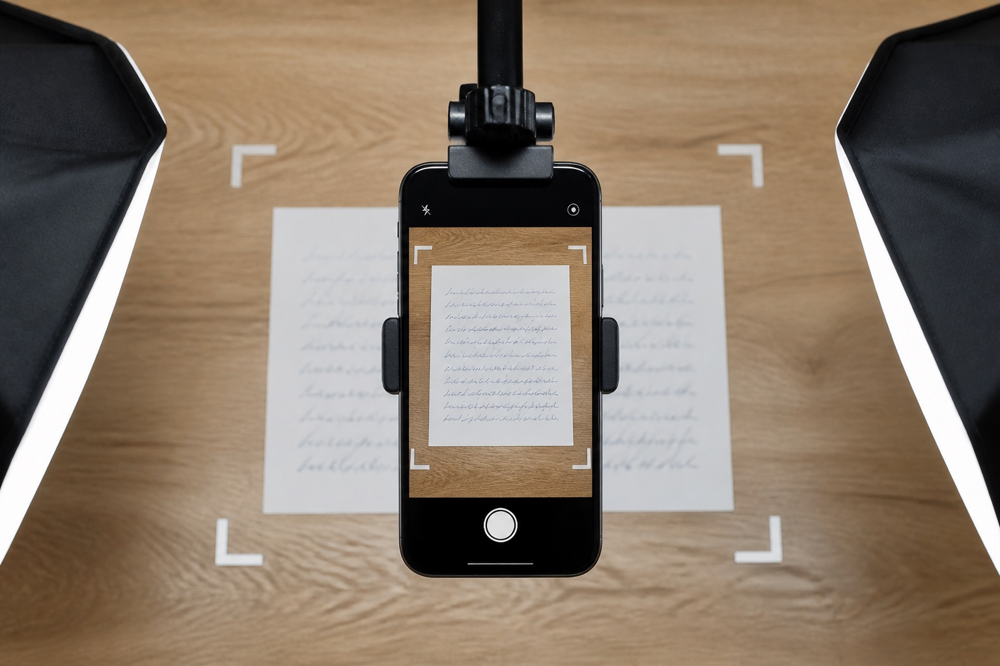
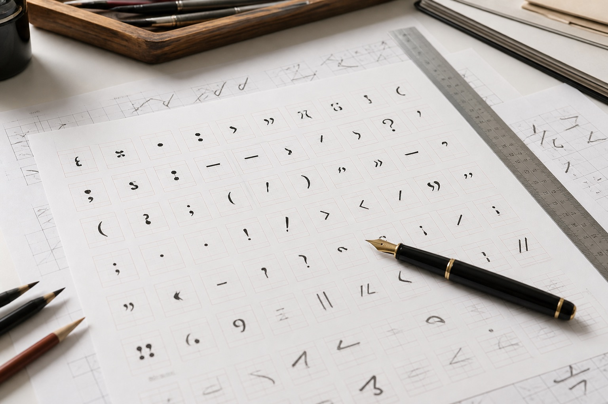

多时期签名与笔迹对比专题内容上线
多时期签名与笔迹对比专题内容上线，围绕模仿笔迹、模仿签名、模仿签字和笔迹鉴定更新资料整理说明。
多时期签名与笔迹对比专题内容上线，围绕模仿笔迹、模仿签名、模仿签字和笔迹鉴定更新资料整理说明。

手写样本完整页与细节图提交方式更新，围绕模仿笔迹、模仿签名、模仿签字和笔迹鉴定更新资料整理说明。

深圳站调整线上手写材料提交方式，手机原图、完整页、细节图和PDF文件需要分开编号保存。

扫描手写文件时怎样选择分辨率、颜色模式和文件格式，并检查浅色笔画、裁边和压缩问题。

线上提交手写资料时，完整页、细节图和补充样本采用统一命名方式，避免多页文件顺序混乱。

手写文件数字化资料栏目重新整理扫描、命名、分类和备份内容，方便按实际处理步骤查找。
自然书写并非匀速完成，可从连续文字、行距、字距、停顿位置和页面空间观察书写节奏。

北京站说明商务文件、签字页、会议批注和自然书写样本的分类、编号与时间记录方法。

手机拍摄手写样本时，应保持页面端正、光线均匀，并同时保存完整页、局部图和未经压缩的原始照片。

个人手写字体字稿模板增加中文标点、数字和常用符号区域，并补充分批采集和补字说明。

多份手写样本可以先按签字、正文和批注分类，再按时间、使用场景和文件载体建立清单。

学生在假期中的书写量、速度和工具变化可能影响字形表现，观察时应使用连续、自然且可比较的样本。